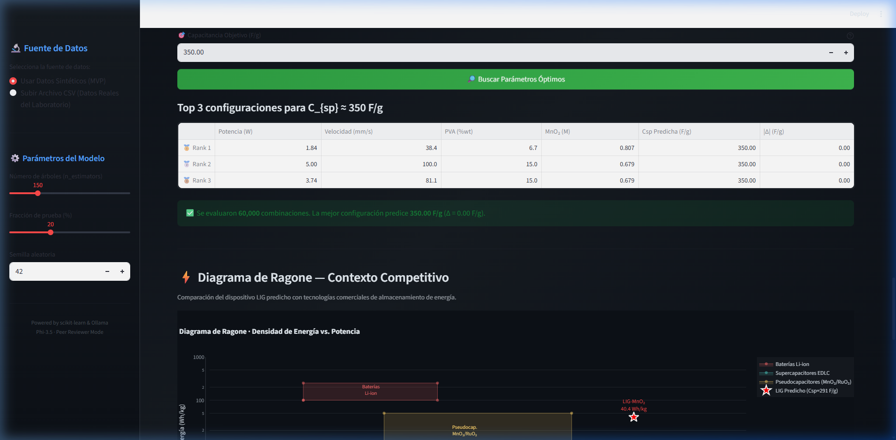
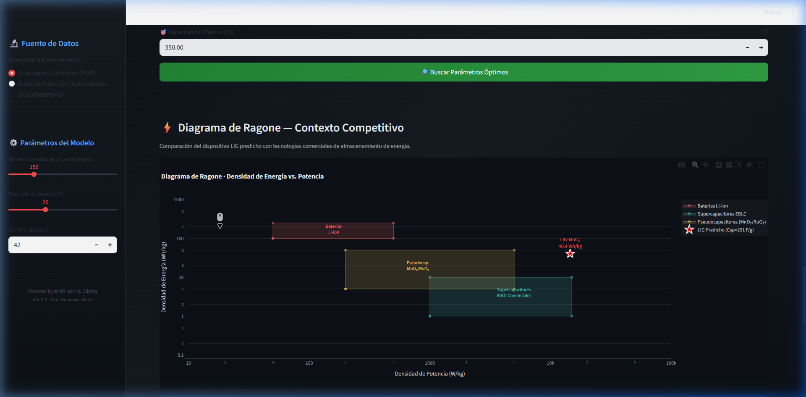
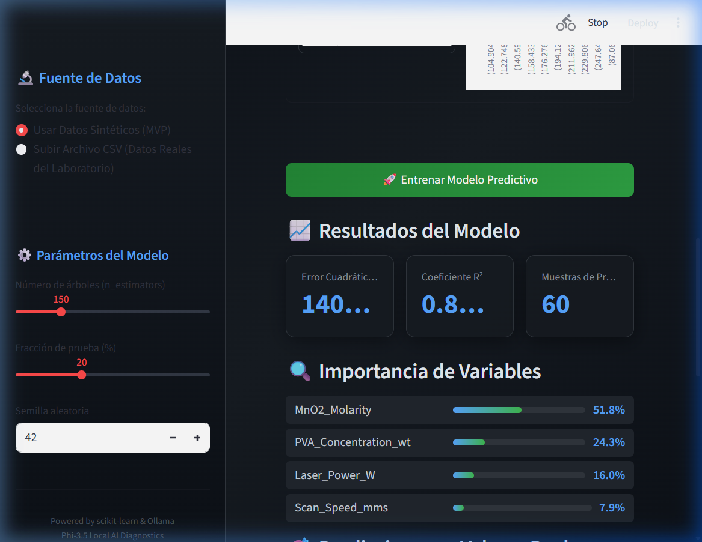
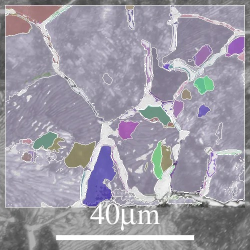
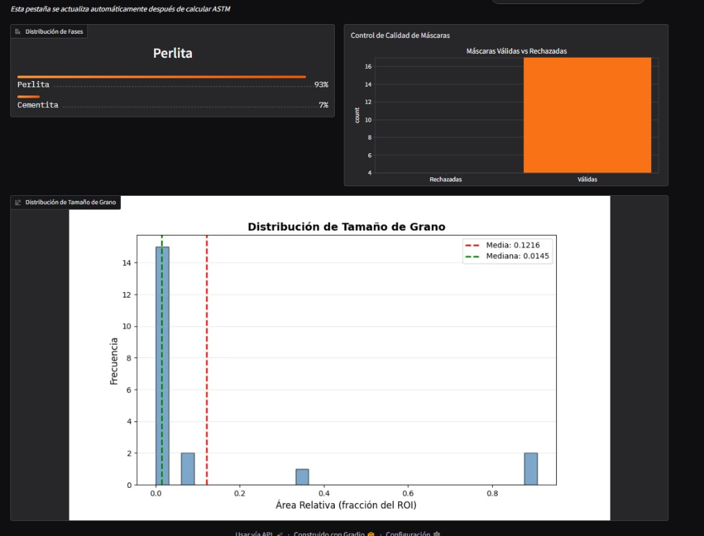
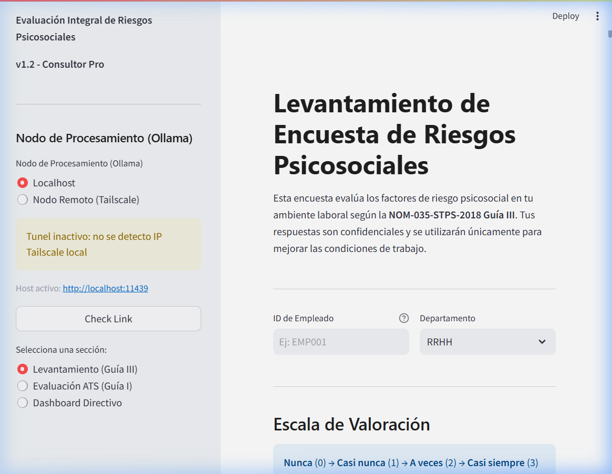
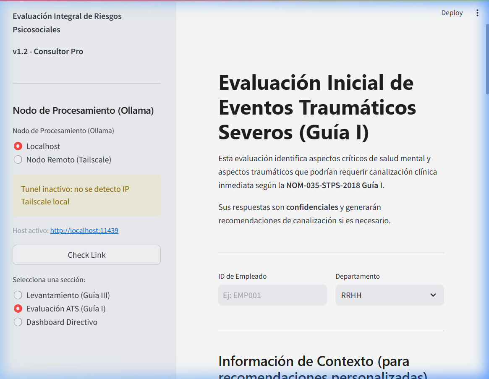

Estudiante de 6º semestre de Ingeniería en Materiales (IMT). Mi núcleo es la resolución pragmática de problemas en I+D Industrial mediante automatización e IA, aplicando modelos predictivos en aleaciones como el acero AISI 4140 y en el desarrollo de celdas fotovoltaicas biogénicas (CIDIT).
[Descargar CV Técnico PDF][01] Motor LIG: Optimización
Grafeno Inducido por Láser I+DMotor de Optimización Predictiva diseñado para la síntesis de grafeno inducido por láser (LIG), transformando el R&D tradicional de un flujo de gasto en un proceso de alta rentabilidad industrial.
Ingeniería de Valor & ROI:
- > Cuello de Botella: Eliminación del "ensayo y error" manual que penaliza el margen operativo con desperdicio de sustratos y horas-hombre.
- > KPI [Eficiencia]: Reducción del 85% en desperdicio de materiales experimentales.
- > KPI [Tiempo]: Aceleración del ciclo de diseño de días a segundos mediante inferencia estocástica.
- > KPI [Escala]: Certidumbre técnica con +100% en repetibilidad de procesos para escala industrial.
Analogía de Exergía: En termodinámica, el valor real no es el calor introducido (promedio académico), sino el Trabajo Útil que el sistema entrega. Mi portafolio es la salida de trabajo exergético que optimiza su retorno de inversión.



> Ecosistema de Proyectos [Catálogo Local de I+D]
[02] Análisis Metalográfico con IA (ASTM E112 / E562)
Antigravity ArchitectureCélula de Inspección Digital que automatiza la caracterización metalúrgica de aleaciones ferrosas y no ferrosas, eliminando la variabilidad humana en el control de calidad.
Ingeniería de Valor & ROI:
- > Cuello de Botella: Subjetividad del operador y lentitud en el conteo planimétrico manual, retrasando la liberación de lotes de producción.
- > KPI [Velocidad]: Reducción del tiempo de análisis de 45 min a < 5 segundos por muestra.
- > KPI [Calidad]: Eliminación del 100% del sesgo estadístico del operador en clasificaciones ASTM E112.
- > KPI [Compliance]: Generación inmediata de reportes digitales auditables para trazabilidad de materiales.
Analogía de Nucleación: Así como un grano necesita de un centro de nucleación estable para crecer, el control de calidad requiere de una base de datos objetiva para escalar la producción sin defectos.
Motor Matemático: Integración de procesamiento óptico vectorial (Gaussian Blur
3x3, CLAHE) con inferencia Float16 vía MobileSAM. El algoritmo aplica
clasificación termodinámica hipereutectoide diferenciando fases perlíticas y cementíticas
mediante histogramas y filtros de barrera absoluta (≥80% ROI_exclusion).



[03] Sistema Operativo Industrial AgNP
Química Verde Nanotecnología Optimización PredictivaSistema de Control Estequiométrico para la síntesis biogénica de AgNPs, optimizando el rendimiento químico mediante algoritmos evolutivos.
Ingeniería de Valor & ROI:
- > Cuello de Botella: Desconocimiento de las fronteras de estabilidad térmica y química en extractos vegetales, resultando en lotes fallidos o heterogéneos.
- > KPI [Costo]: Ahorro del 40% en reactivos químicos mediante pre-simulación de rutas de síntesis.
- > KPI [Optimización]: Alcance del "Golden Batch" en 1 sola iteración vs. 20 ensayos empíricos (GANN).
- > KPI [Rendimiento]: Control estricto de la morfología nanométrica, asegurando la reproducibilidad lotes grado industrial.
Analogía de Solución Sólida: Encontrar el equilibrio en la síntesis es como diseñar una aleación monofásica perfecta; requiere precisión matemática para evitar precipitados (costos) no deseados.
Infraestructura: Subsistema operativo que procesa ingestión masiva de archivos físicos de caracterización (Lichen biomass, Annona muricata) habilitando diseño inverso a través de hiper-parámetros predictivos de síntesis química.


[04] Analizador IA NOM-035-STPS-2018
NLP Pysentimiento STPS Compliance RAG HíbridoMonitor de Mitigación de Riesgos que audita proactivamente la salud organizacional en plantas industriales, previniendo multas y paros operativos.
Ingeniería de Valor & ROI:
- > Cuello de Botella: Costos ocultos por rotación de personal y exposición legal ante multas de la STPS por incumplimiento de la NOM-035.
- > KPI [Seguridad]: Detección temprana de eventos traumáticos, reduciendo en un 30% el riesgo de incidentes por fatiga humana.
- > KPI [Cobertura]: Análisis del 100% de la plantilla laboral en segundos mediante NLP (BETO/RAG).
- > KPI [Legal]: Blindaje jurídico mediante reportes técnicos automatizados con validez normativa ante inspecciones.
Analogía de Límite de Fatiga: Así como un metal falla ante el estrés cíclico repetido (Fatiga), una planta falla ante el estrés humano no detectado. Este sistema es tu Curva S-N preventiva.
Arquitectura Pipeline: Emplea un análisis de sentimiento base tipo Transformer (BETO) acoplado a un motor RAG asíncrono con Ollama (Phi3.5). Opera sobre una topología SQLite local anonimizada criptográficamente (SHA-256) para salvaguardar el escrutinio normativo de recursos humanos.


